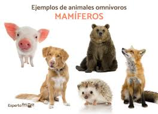

Los animales omnívoros son aquellos que se alimentan tanto de fuentes animales como vegetales , lo que les permite adaptarse a diversos entornos y fuentes de alimento. Consumen carne, pescado, insectos, frutas y plantas, actuando a menudo como consumidores secundarios. Son oportunistas, lo que significa que comen lo que encuentran para sobrevivir
